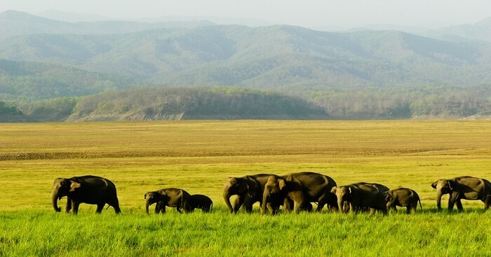
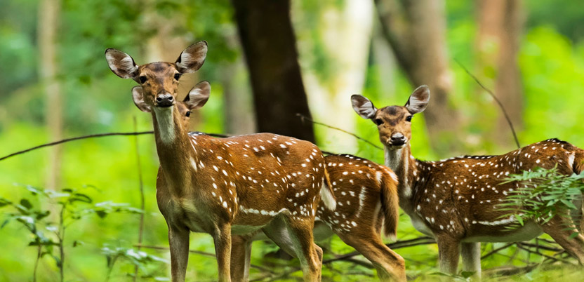
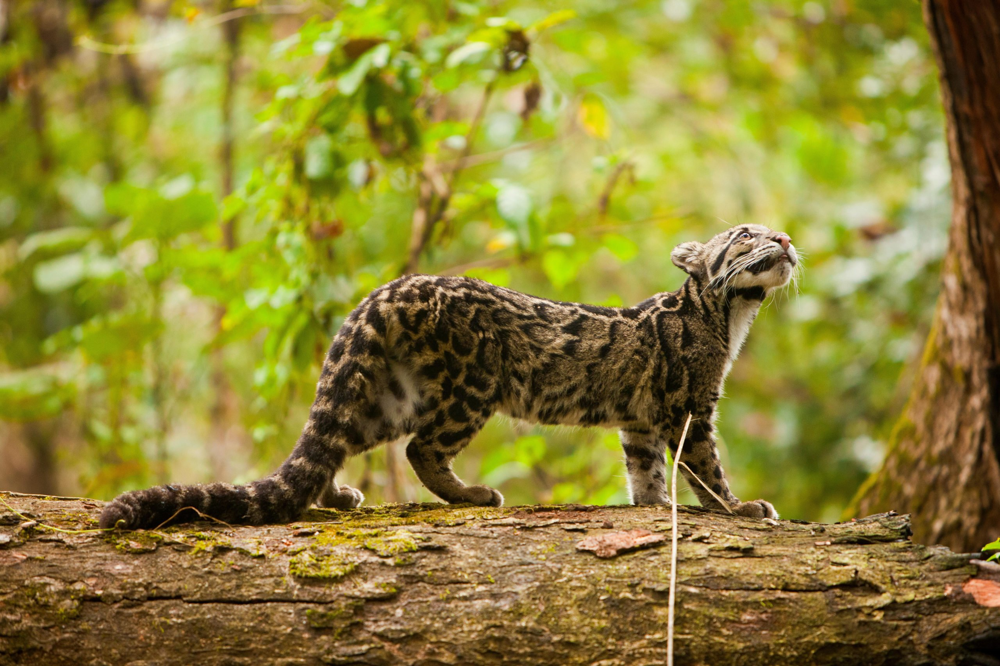
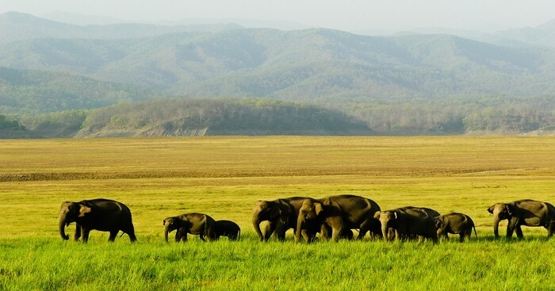
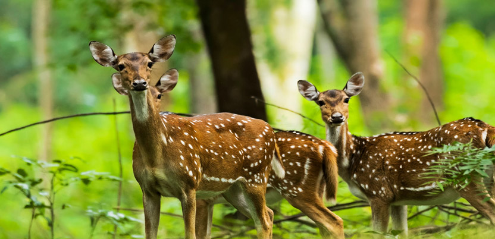
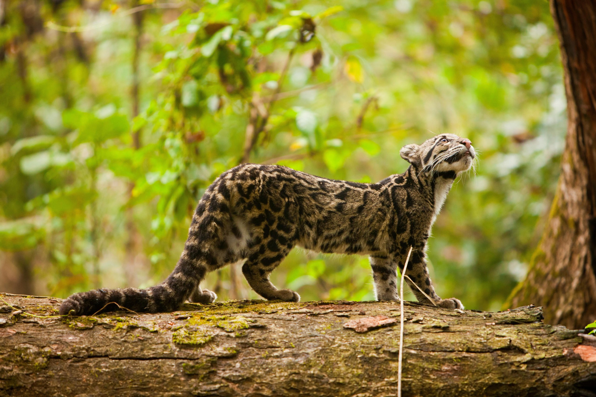

Outstanding Universal Value
Brief synthesis
Manas Wildlife Sanctuary is located in the State of Assam in North-East India, a biodiversity hotspot. Covering an area of 39,100 hectares, it spans the Manas river and is bounded to the north by the forests of Bhutan. The Manas Wildlife Sanctuary is part of the core zone of the 283,700 hectares Manas Tiger Reserve, and lies alongside the shifting river channels of the Manas River. The site’s scenic beauty includes a range of forested hills, alluvial grasslands and tropical evergreen forests. The site provides critical and viable habitats for rare and endangered species, including tiger, greater one-horned rhino, swamp deer, pygmy hog and Bengal florican. Manas has exceptional importance within the Indian sub-continent’s protected areas, as one of the most significant remaining natural areas in the region, where sizeable populations of a large number of threatened species continue to survive.
Criterion (ix):River fluctuations by the Brahmaputra river system result in spectacular examples of riverine and fluvial processes. River bank erosion, sedimentation and formation of new lands as well as new water-bodies, plus succession between grasslands and woodlands represents outstanding examples of significant and ongoing, dynamic ecological and biological processes. Wet alluvial grasslands occupy nearly two-thirds of the park area and are maintained by annual flooding and burning. These natural processes create complexes of habitats which are also responsible for a diverse range of predator/prey relationships.
Criterion (x):The Manas-Beki system is the major river system flowing through the property and joining the Brahmaputra river further downstream. These and other rivers carry an enormous amount of silt and rock debris from the foothills resulting from the heavy rainfall, fragile nature of the rock and steep gradients of the catchments. This leads to the formation of alluvial terraces, comprising deep layers of deposited rock and detritus overlain by sandy loam and a layer of humus represented by bhabar tracts in the north. The terai tract in the south consists of fine alluvial deposits with underlying pans where the water table lies near to the surface. The area contained by the Manas-Beki system gets inundated during the monsoons but flooding does not last long due to the sloping relief. The monsoon and river system form four principal geological habitats: Bhabar savannah, Terai tract, marshlands and riverine tracts. The dynamic ecosystem processes support broadly three types of vegetation: semi-evergreen forests, mixed moist and dry deciduous forests and alluvial grasslands. The dry deciduous forests represent an early stage in succession that is constantly renewed by floods and is replaced by moist decidous forests away from water courses, which in turn are replaced by semi evergreen climax forests. The vegetation of Manas has tremendous regenerating and self-sustaining capabilities due to its high fertility and response to natural grazing by herbivorous animals.
Integrity:
The property is a wildlife sanctuary with a focus on maintaining the integrity of the property as a natural area. It forms the core of a larger national park, the boundaries of which are clearly demarcated and supervised. Manas Wildlife Sanctuary is buffered on the north by the Royal Manas National Park of Bhutan and on the east and west less effectively by the Manas Tiger Reserve. Transboundary cooperation is therefore important to the effectiveness of its protection.
Protection and management requirements:
The property, which has six national and international designations (i.e. World Heritage Site, National Park, Tiger Reserve (core), Biosphere Reserve (national), Elephant Reserve (core) and Important Bird Area) has the highest legal protection and strong legislative framework under the provisions of Indian Wildlife (Protection) Act, 1972 and Indian Forest Act, 1927/Assam Forest Regulation 1891. The property benefits from government support at both national and regional levels as well as involvement of national and international conservation organisations.